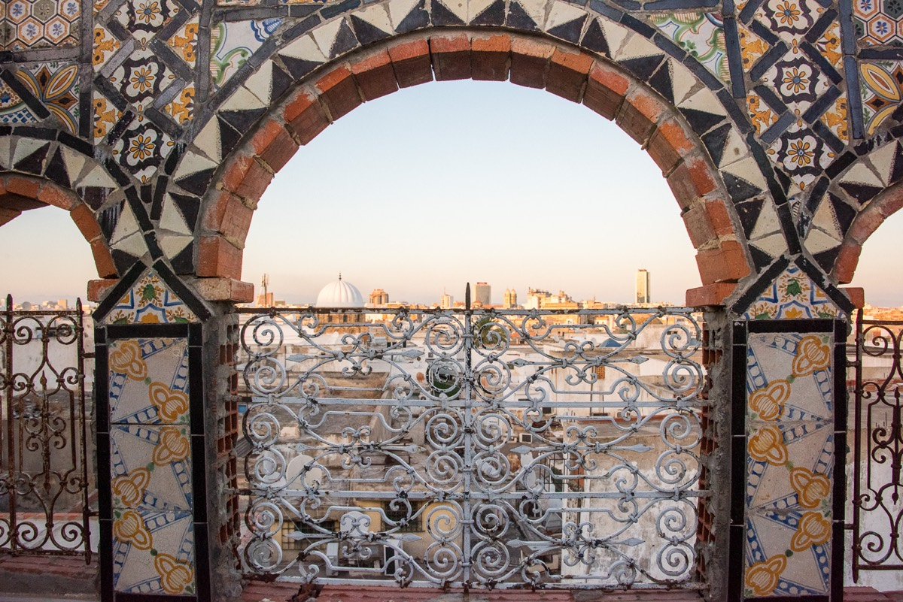
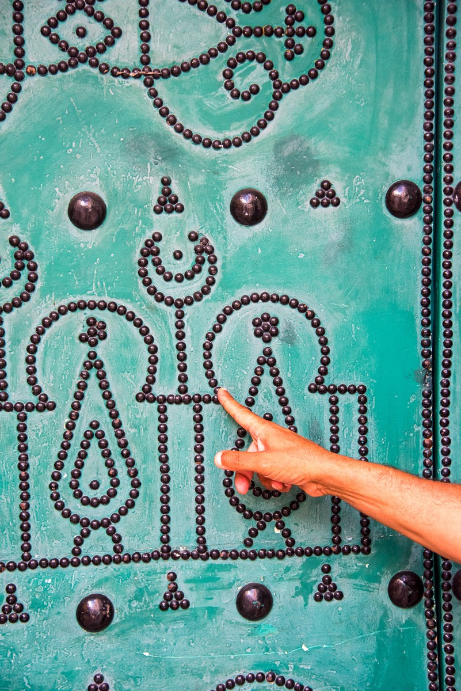
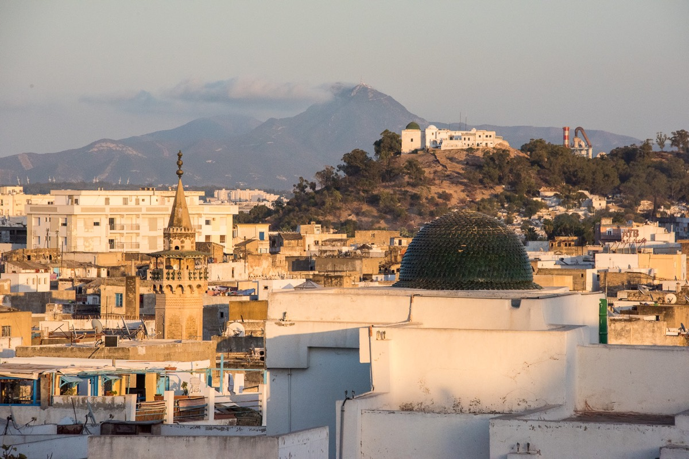
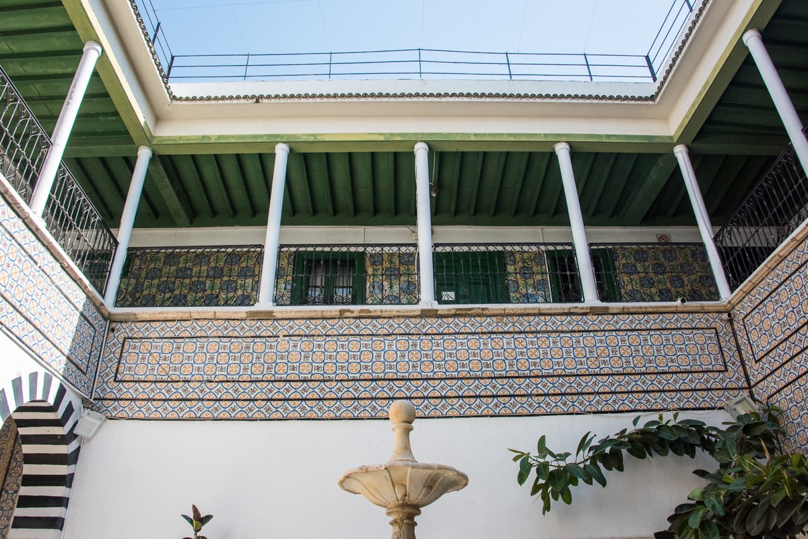
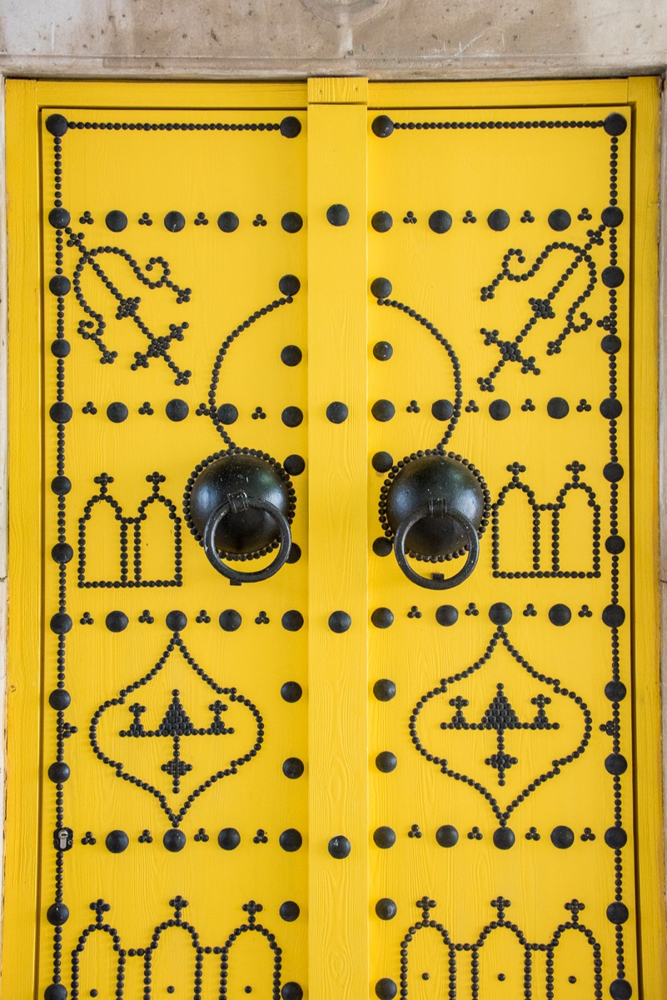
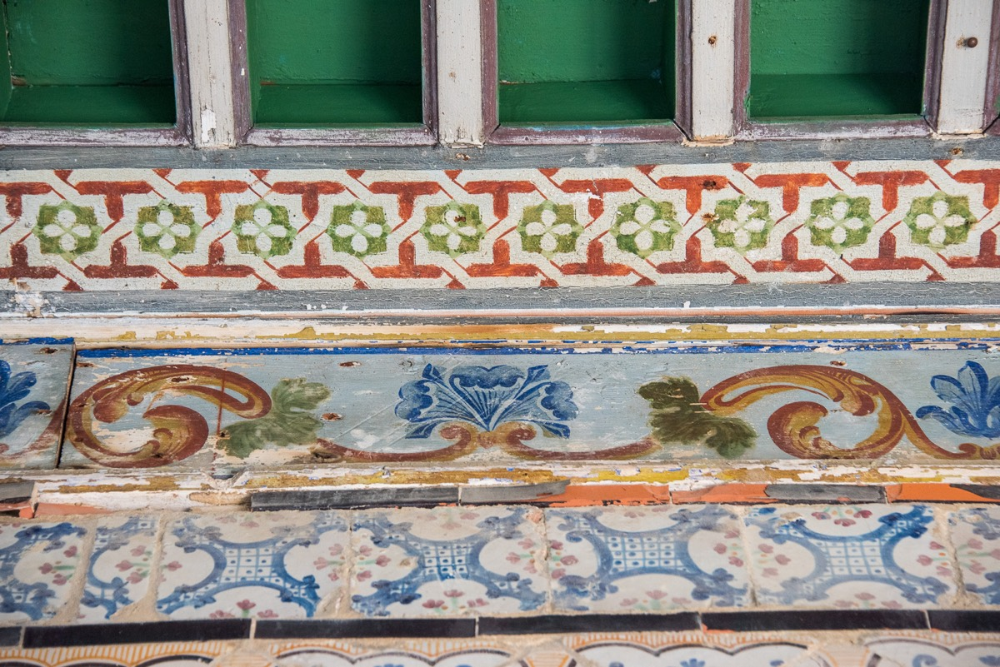
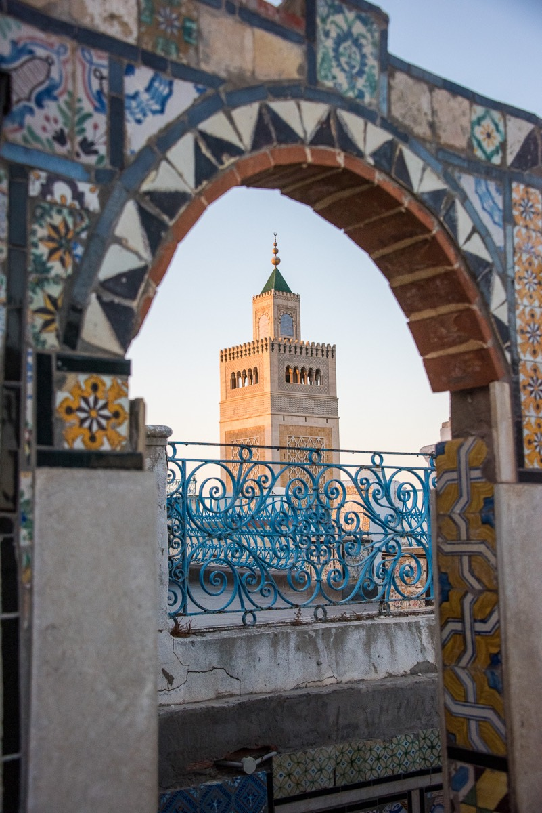
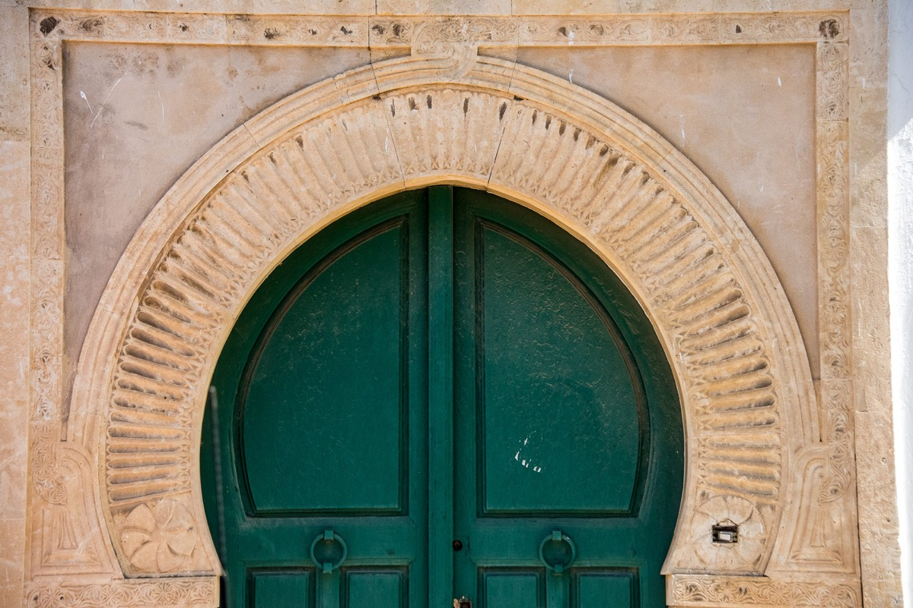
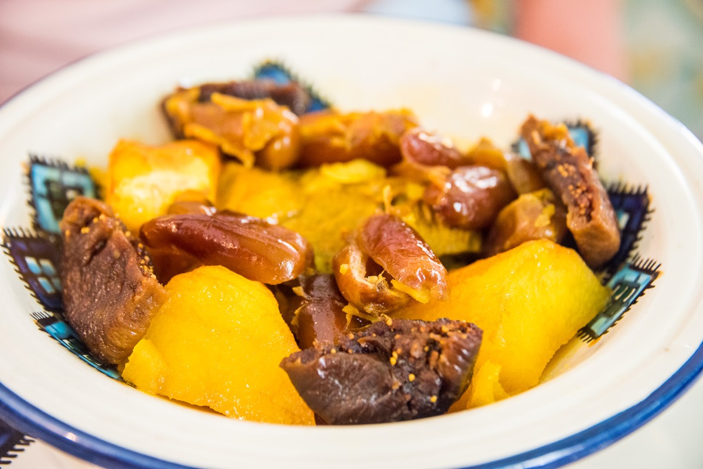
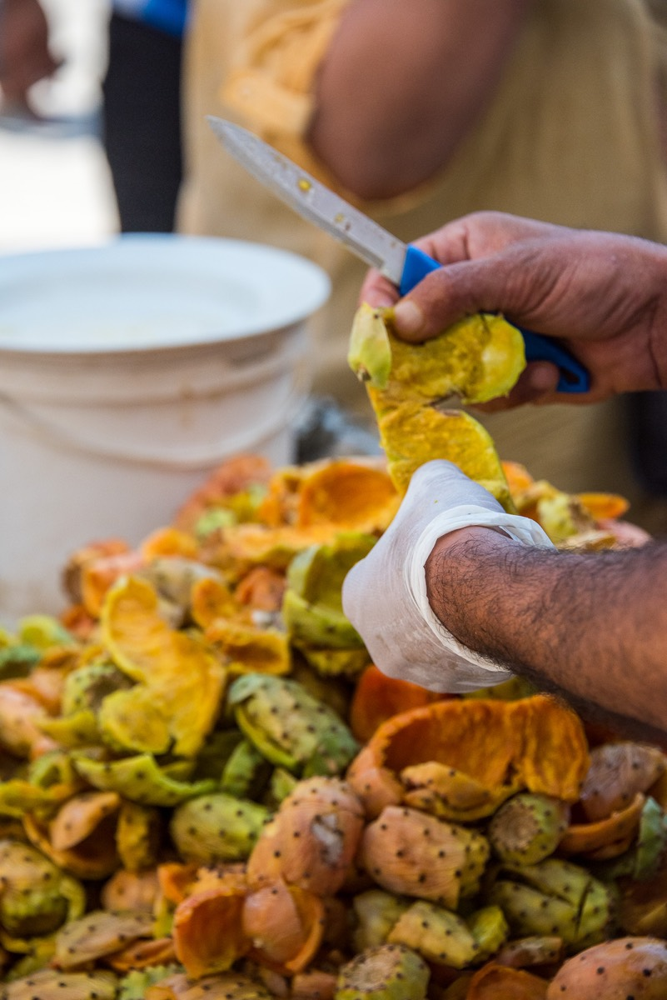

Doors, Colours
& the Evil Eye
The guide, a Tunisian speaking Italian to the group and English to a few listeners, never gives his name, and my notes are rough, with Italian and English running into each other. What comes through is a walk organised by doors. Every house on the lane shows its owners' rank, its religion and its fears on the street side, and almost nothing else.

Start with the hand. A hand-shaped knocker, touched on the way in, wards off the evil eye, a protection he says is found in very many places. Inside, houses follow a plan: two porticoes facing each other across the courtyard, and the most important room, often the bedroom, directly opposite the entrance. Guests did not step straight into the family's space. A waiting room sat just inside the door, where they waited to be received.
Blue is the commonest, he says, perhaps because Tunisia is a Mediterranean country and the doors echo the sea and sky, and white the permanent sun. It is the popular colour.
Yellow marks the aristocratic families, or the middle class imitating them. Green is the colour of hope and paradise, so shops and religious buildings, shrines above all, use it.
On the first day of the Muslim new year, he adds, families prepare a green soup to wish each other a "green year": not green with money, but green like paradise. Some people take offence at the wording, hearing only the lack of money.
Deys, Beys
& the Slave Soldiers
To explain the houses he explains who ruled. The Turks, he says, won the war against the Spaniards in a conflict lasting forty years, from 1534 to 1574, after which the new rulers appointed a dey, a military governor, and a bey, a civilian who collected taxes and dealt with the tribes. The bey was kind to the tribes and became so popular that he was able to push the dey aside. After some eighty years of deys, the beys took power.

The Ottoman army behind them was the janissary corps, and the guide tells the story with some relish. Janissaries were Christian boys taken at six to ten years old, he says, sent to rural families to be hardened and taught the language and customs, and later turned into soldiers. They were slave-soldiers, but paid, "the only slaves in the ancient world who were paid", and not allowed to marry or take another trade until they were forty, when they were free.
"They took the empire as their mother and the sultan as their father. Having grown up away from their own parents, they defended that family, and so they fought ferociously."
— Guide, on the janissaries
Many came from the Balkans: Albanians, Greeks, Serbs, Croats and Moldavians, taken as adults or as children, or handed over by families who wanted a son to rise. Some became politicians. He gives examples from Tunis itself: a keeper of the seals of Moldavian origin, a first bey from Corsica. Foreign-born men ran the state.
Tabarka, Lepanto
& the Man Who Lost a Hand
The palace he is standing beside leads him sideways. Its owner's daughter Elena became Aisha on converting and marrying the governor's brother, whose own mother, a slave, was a Tabarchina. Tabarka, on Tunisia's northern coast, was settled by Genoese from the Ligurian village of Pegli, coral fishermen working a coast still famous for coral. From 1541 and for two centuries they lived there; troubles with the Turks pushed them out and they were resettled on an island off Sardinia, named for the Savoyard king Charles Emmanuel, where their descendants still speak Tabarchino.
The janissaries, he says, suffered two defeats. The first was the siege of Malta, which failed. The second, and more important, was Lepanto in Greece: the Holy League, led by the Pope, with Venetians, Genoese, Spaniards, Savoy and the Knights of Malta on one side and the Turks on the other. It decided the future of the southern Mediterranean. A Turkish win would have made Italy and Spain Muslim.
On the Christian side was a Spaniard who lost the use of his left hand: Miguel de Cervantes. Returning home he was captured by Algerian pirates, held as a slave in Algiers for five years, ransomed, and then wrote Don Quixote.
He sets the novel beside Dante: Spanish culture abroad is the Cervantes Institute as Italy's is the Dante Alighieri Society, and the language of Cervantes stands where the language of Dante, chosen as Italy's, or of Shakespeare, stands for English. — Guide
The House with
Two Porticoes at an Angle
Here the rule he laid down at the start has an exception. In almost every house the porticoes face each other, the plan of the great Medina palaces. At this one, which the guide describes as a seventeenth-century house, the porticoes sit side by side, one on the north and one on the east.

Its name is military: bash is "head" in Turkish, and the family were Turkish-origin military dignitaries. In the twentieth century the Franciscan sisters bought the house and ran it as a small hospital with a chapel, and it is now a Mediterranean cultural centre linked to a Sicilian foundation, which hosts exhibitions and concerts. The guide dates the change to 2003 or 2004; published accounts say 2000.
Guests did not enter through the family's door. Wealthy houses had a separate guest floor, with its own entrance, so that outsiders never crossed the private space.
And from outside you see nothing. The house is blind. Windows, when there are any, sit high up.
"The only relationship with the outside is the sky. The beauty is inside, made for themselves. Now, in modern life, to see the beauty of your house you have to put a chair in your neighbour's garden, because the beauty is made for the others."
— Guide, in English
A City
of Blind Walls
Walking on, the guide points out the rhythm of the Medina. Away from the merchants' streets the grandest houses cluster, because that is where there was room to build large. Near the souks, space was for caravanserais, a kind of hotel for animals and people. Roofs are flat so that rainwater can be collected: aristocratic houses had a fountain, ordinary ones a cistern or a well. Dead-end lanes give security, and a stranger is noticed at once.

When a family outgrew its house a son did not leave. He needed a new space within the family compound, and the answer was the sabbat, a covered passage built across the lane to join houses. Building one needed the agreement of the neighbours and the consent of an official, a figure the guide calls the administrative representative of the quarter.
The result is a house reaching over the street. It is also practical: open one window and the opposite one, and a cool draught passes through in summer.
Andalusian Hands:
Tiles and Chechias
The black-and-white tilework seen on doors, the guide says, is Andalusian in influence, but older than that. The technique began with the first Arab dynasty, with its capital at Damascus in Syria, and travelled with the conquerors to Spain. When Andalusians were later expelled from Spain, many arrived in Tunis and brought the technique back along the same road. Doors and windows are Italian in style, he adds, and tiles show Portuguese influence. A door with a pointed Andalusian arch, a stylised cypress and a half-moon is all symmetrical: whatever is on the right is on the left.

His best example is the chechia, the red felt cap. The Andalusians who came brought the craft, he says, and the rulers, wise enough, built two markets for them to carry on making it. The caps are made of lamb's wool, soaked in hot water with soap and felted, then dyed. Wherever in the world you see one, he claims, it was made in Tunis, even the black ones worn in Libya. Newer styles have appeared recently, including a women's version and one for children, which did not exist five years ago, to attract buyers.
Borrowed Columns
& a Street that Prays
He is careful with the word. Masjid is the small place where you bow in prayer; the great jami' comes from the verb to gather people, and has the same root as jami'a, university. Mosque and university share a root, one masculine and one feminine in Arabic. A Quranic school stands beside one of the mosques.

On a mosque with an unusual shape he says the builder's tomb is attached: it is the tomb of Youssef Dey, whose own mosque, with a distinctive minaret, is the Turkish layer in the city. In the old days, he says, important men often had private tombs for their families.
The columns of the older mosques were recovered, he explains, above all from Roman and Byzantine buildings. Nobody worried about harmony; what mattered was having building material. In the great mosque's prayer hall there are 184 columns, none like another. Someone has even found, he says, a foot of Apollo.
One of the minarets is among the oldest in the city and much copied elsewhere, though he suspects few copied the system.
The mosque's crowds spilled out. Students from the countryside came to study in the Medina and slept in the mosque. When it was full at prayer time the lane outside became a prayer hall: no need to find the direction of Mecca, since they faced the same way as everyone else. For centuries the same mosque was the only one where Friday prayer was allowed, the guide says. Prayer beads, he adds, run to 99 beads for the names of God, or 33, which you go round three times.
The Slave Market
& the Abolition of 1846
The guide says the market took its name from the word for kneeling: the people on sale were made to kneel. It was the city's slave market, and in 1846 the Bey who abolished slavery was Ahmad Bey, who then made a state visit to France, the first sovereign of Tunis to travel abroad, which caused a great stir.
Beside him, in the guide's telling, stood a Genoese-origin minister named Raffo, who helped to arrange the journey and improved relations between the Kingdom of Sardinia and Tunisia. Raffo, a very rich man, also eased the condition of Christian slaves by having chapels built wherever they were held.
A digression on terminology for Black people, which my notes only half preserve, is omitted here.
Dar el Jeld, Sadiki
& Fish Behind Doors
The most elegant street in the Medina, in the guide's words, is where a house called Dar el Jeld, "the house of leather", is now both a hotel and, he says, one of the most expensive restaurants in the Medina. Its fountain, he notes, includes a capital that was carved for the purpose and not, as usual, taken from another building. Not far off is a school founded in 1875, the lycée where Tunisia's first president, Habib Bourguiba, studied.

Lower down are warehouses where fish is stored behind closed doors. The reason is the evil eye: fish is wealth, and wealth attracts envy. The word for the stores, makhazin, is also the origin of the Italian magazzino and the English magazine.
He enjoys the pattern. Alcohol, he says, is Arabic too: the "al" is the Arabic article, as in Spanish words from Arabic. Words travel.
A house nearby once belonged to an institute for the preservation of Tunisian Andalusian music, called malouf, and had been sold to a farmer who built its distinctive covered passage. He passes an oud, which he compares to a mandolin, played in the area.
Synagogues, Churches
& "Home, Sweet Home"
Past a library that was once a Turkish bath, and before that a synagogue, the guide describes this as the Jewish quarter of the Medina, where Jews lived inside the walls because there was more protection there. He credits a Muslim saint, Sidi Mahrez, who defended the Jewish cause, loved Tunis, helped found the Medina and walls, and brought Jews inside. The "born 1951" in my notes is almost certainly 951.
Near here an Anglican church stands among trees, where British and American merchants who died of disease were buried. Among them, he says, was John Howard Payne, the American consul, who wrote the song Home, Sweet Home. He tells the story that it was banned during the American Civil War: it spoke so well of home that soldiers who heard it felt homesick and deserted.
Payne died in Tunis in April 1852 and was buried here, and in 1883 his remains were taken back to Washington. The ban is the guide's account; see the notes.
He then shows a former church, now a gym. In 1964, he says, a modus vivendi between the Vatican and Tunisia let the Catholic Church keep around ten churches, while 107 others became public buildings: sports halls, police stations, institutions. Published accounts agree on the substance: only seven churches were kept, and more than a hundred handed over without compensation.
Henna, Weddings
& a Jar of Sweets
It is the wedding season, and the guide shows what a bride needs. Henna dyes hands and feet red. Brides, he explains, return for three successive nights to have it applied, with gloves on afterwards, so the paste stays on. She must sleep without moving: she eats, uses the toilet and prepares, and lies propped on cushions until morning, when the process repeats. Men use a darker henna for their beards, and a green clay, ghassoul, is for hair and body.

Tall jars are filled with sweets. One tradition, he says, is to break such a jar when a boy was circumcised without anaesthetic: his friends scramble for the sweets and make a racket, which covers the child's cries.
The neighbourhood, he adds, was long unfashionable. Rural arrivals in the 1970s and 80s pushed middle-class residents to the periphery, and only since the 1990s has there been a return, with young people living in the Medina again, for its traditional cafés.
Five
and Seven
He closes on numbers. Seven is the international one: seven days of the week, seven lands and seven seas crossed in folk tales, seven heavens and seven levels of paradise and of hell, a Tunis saint's tomb visited seven times as the equivalent of a pilgrimage, and a wise person turns his tongue seven times before speaking. Five is local: the five fingers of the hand of Fatima, the protection against the evil eye with which the tour began.

The Greeks had seven too. In the contest between Apollo and the satyr Marsyas, who played two flutes, the lyre beat the flute: a stringed instrument over a wind instrument, seven over two. The lyre has seven strings.
He has a preference. A guest says five is "our thing", and seven too international. He believes more in seven.
What the Sources Say
Note quality. The walk switched between Italian and English, and my notes are patchy. The guide's name and operator are not given, and I have not invented either. Passages I could not reconstruct are left out, including most of the street-art, herbalist and politics asides.
Dates. The siege of Malta was in 1565 (my notes say 1561) and the battle of Lepanto in 1571. Cervantes was wounded at Lepanto, captured in 1575, held in Algiers until ransomed in 1580, and published Don Quixote from 1605. The Muslim new year 1444 is usually given as 30 July 2022; the guide says 29 July.
Deys and beys. His summary is simplified. The Ottomans took Tunis for good in 1574; deys held power through much of the 17th century while the Muradid beys rose, and the Husainid dynasty of beys ruled from 1705.
Dar Bach Hamba. Published accounts give the Bach Hamba as a Turkish-origin military family and say the house passed to the Franciscan sisters in 1923; the Orestiadi Foundation's cultural centre dates from 2000, not 2003–04, and the guide's Algerian first owners are unconfirmed.
Chechias. The souk was built in 1691–92 by the Muradid bey, and Andalusian refugees from the early 17th century developed the trade. His claim that every chechia in the world is Tunisian is an overstatement.
Youssef Dey Mosque. Built c. 1615–16 by Youssef Dey, it was the first Ottoman-style mosque in Tunis, with his tomb attached. The slave market and the Turkish tailors' souk belong to the same complex.
Payne. He died in Tunis in April 1852 as American consul and was reburied in Washington in 1883. Sources stress the song's popularity with both armies in the Civil War, and I could not confirm the ban.
1964. The modus vivendi was signed on 10 July 1964; the Church kept seven churches, and more than a hundred were handed to the state.
Unchecked. The Medina's population of 110,000, the foot of Apollo, the janissary rules on age and marriage, the 184 columns (a commonly quoted figure), the dating of Sidi Mahrez, the details of Raffo and the sweets-jar custom are the guide's and I have not verified them. The 184 columns and the names Dar el Jeld and the Sadiki school are my identifications of places my notes only half name.